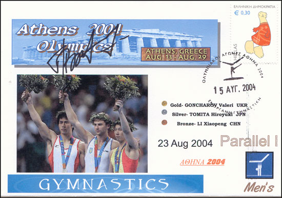

Valery Goncharov (UKR)
2004 Olympic PB Gold Medalist

Medal Total
Olympic Games: 1
Gold, 1 Silver
World Championships: 1 Bronze
World Cup: 1 Gold
European Championships: 1 Silver, 1 Bronze
Valery was born on September 19, 1977.
Competition Results
1994
Jr. European Championships: 10th AA, 6th R
1995
HUN International: 3rd AA
USA-UKR Dual Meet: 1st Team, 13th AA
1996
American Cup: 19th AA (prelims)
Intl. Championships of Romania: 5th AA
3-on-3 International: 3rd Team
UKR Cup: 4th AA
1997
UKR Championships: 8th AA
World Championships: 32nd AA, 7th V
1998
American Cup: 11th AA (prelims)
3-on-3 International: 1st Team
UKR Championships: 5th AA, 2nd HB, 3rd PH
1999
Samboo Cup: 6th PB
2000
Belarus Open: 6th AA
Gymnastics Challenge: 3rd AA
Olympic Games: 2nd Team
UKR Championships: 4th AA, 1st HB
UKR Cup: 5th AA
Voralberg Gym Days: 2nd AA
World Stars: 11th AA
2003
DTB Cup: 3rd PB
Gander Memorial: 9th AA
Swiss Cup: 6th AA
University Games: 3rd HB
World Championships: 8th Team
2004
DTB Cup: 3rd PB, 8th PH, 8th HB
European Championships: 2nd PB, 7th HB
Gander Memorial: 10th AA
Olympic Games: 7th Team, 1st PB, 8th HB
Stella Zakharova Cup: 1st HB, 2nd PB
Swiss Cup: 4th Team
World Cup: 1st HB, 7th PB
2005
DTB Cup: 7th HB
European Championships: 3rd HB
World Championships: 3rd HB, 4th PB
This page was created on May 21,
2006.
© Gymn Forum